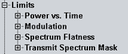

Limit Settings
The configuration dialog defines limits for the modulation and spectrum results.
For details, see "Limit Settings and Conformance Requirements".

Limit settings
If an option required for a standard is missing, related limit branches are hidden. Example: If option R&S CMW-KM651 is not available, all 802.11n branches of the tree are hidden.
For limit configuration via remote commands, refer to the following sections:
- "Power vs. Time Limits"
- "Modulation Limits: 802.11b/g DSSS"
- "Modulation Limits: 802.11a/g OFDM"
- "Modulation Limits: 802.11p OFDM"
- "Modulation Limits: 802.11n"
- "Modulation Limits: 802.11ac"
- "Modulation Limits: 802.11ax"
- "Spectrum Flatness Limits: 802.11a/g OFDM"
- "Spectrum Flatness Limits: 802.11p OFDM"
- "Spectrum Flatness Limits: 802.11n"
- "Spectrum Flatness Limits: 802.11ac"
- "Spectrum Flatness Limits: 802.11ax"
- "Transmit Spectrum Mask Limits: 802.11b/g DSSS"
- "Transmit Spectrum Mask Limits: 802.11a/g OFDM"
- "Transmit Spectrum Mask Limits: 802.11p OFDM"
- "Transmit Spectrum Mask Limits: 802.11n"
- "Transmit Spectrum Mask Limits: 802.11ac"
- "Transmit Spectrum Mask Limits: 802.11ax"